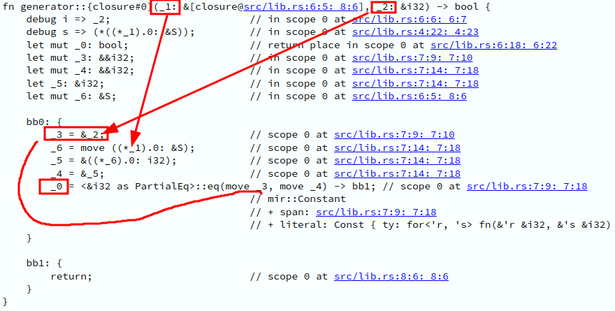
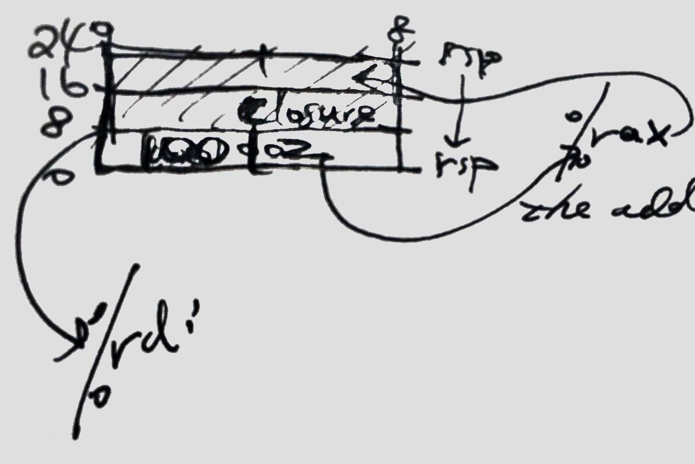
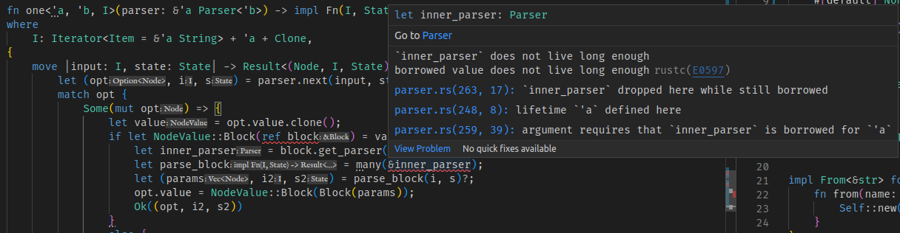

Rust 闭包的生命周期
闭包的引用
从上一篇文章可以看出，闭包是一个容易擦枪走火的东西，写简单的东西也许没问题，但如果用一种极其别扭的方式来使用闭包的话，我不知道 Rust 是否进化到能理解这种代码(见目录)，因为如果用 C/C++ 写一样的代码，编译器肯定不会报错，但这也说明了指针的危险。本文描述我遇到的一个问题，代码经过简化。
struct S(i32);
fn generator<'a, 'b>(s: &'a S) -> impl Fn(&'b i32) -> bool + 'a
{
|i: &i32| -> bool {
i == &s.0
}
}
fn test() {
let s = S(100);
let cmp = generator(&s);
let n = 2;
dbg!(cmp(&n));
}
fn main() {
println!("Hello, world!");
}
报错：
error[E0597]: `n` does not live long enough
--> src/main.rs:15:14
|
15 | dbg!(cmp(&n));
| ^^ borrowed value does not live long enough
16 | }
| -
| |
| `n` dropped here while still borrowed
| borrow might be used here, when `cmp` is dropped and runs the destructor for type `impl Fn(&i32)-> bool`
|
= note: values in a scope are dropped in the opposite order they are defined
For more information about this error, try `rustc --explain E0597`.
error: could not compile `closure` due to previous error
注意这句话：
values in a scope are dropped in the opposite order they are defined
出错原因是 n 先被释放，cmp 作为一个闭包，在 n 之后释放，cmp 引用了 n, 也就是说，n 的释放影响了 cmp，所以报错。
所以调整位置成这样就对了：
fn test() {
let s = S(100);
let n = 2;
let cmp = generator(&s);
dbg!(cmp(&n));
}
现实中这种调整不是那么容易, 比如我正在处理的问题，知道了原因但目前位置还没解决，打算用 trait 的方式以类似于 OOP 的方式调用方法，而不是闭包。
问题：
- 为什么
impl Fn(&i32) -> bool有 destructor? - 如何自定义闭包的 destrutor?
第一个问题很容易：语言规定一切变量都有 destructor。第二个问题：不知道，没有相关资料。
内部结构
闭包肯定要找块空间来存储它捕获的变量，接下来看看它的底层结构。
MIR
https://play.rust-lang.org/ 可以看到闭包的 MIR

可以看出：
&[closure@...就像&self一样&s存在[closure@...]的第一个位置- 最后两个
i32的引用对比
结论就是数据存在 [closure@... 处
汇编
Playground 也可以生成汇编：
playground::generator:
subq $16, %rsp
movq %rdi, 8(%rsp)
movq %rdi, (%rsp)
movq (%rsp), %rax
addq $16, %rsp
retq
playground::generator:::
subq $40, %rsp
movq %rsi, 16(%rsp)
movq %rdi, 32(%rsp)
movq (%rdi), %rax
movq %rax, 24(%rsp)
leaq 16(%rsp), %rdi
leaq 24(%rsp), %rsi
callq core::cmp::impls::<impl core::cmp::PartialEq<&B> for &A>::eq
movb %al, 15(%rsp)
movb 15(%rsp), %al
andb $1, %al
movzbl %al, %eax
addq $40, %rsp
retq
playground::test:
subq $24, %rsp
movl $100, (%rsp)
movl $2, 4(%rsp)
movq %rsp, %rdi
callq playground::generator
movq %rax, 8(%rsp)
leaq 4(%rsp), %rax
movq %rax, 16(%rsp)
movq 16(%rsp), %rsi
leaq 8(%rsp), %rdi
callq playground::generator::
addq $24, %rsp
retq
有一个奇怪的地方，test 函数的指令中，先调用 playground::generator 生成 cmp, callq playground::generator:: 对应了 cmp(&n)
奇怪的地方是闭包的名字叫做 generator::
这也解释了 MIR 中闭包的签名是：
fn generator::{closure#0}(_1: &[closure@src/lib.rs:6:5: 8:6], _2: &i32) -> bool；
汇编指令中只需要关注 i 对应的指令：
movq %rsi, 16(%rsp)
movq %rdi, 32(%rsp)
movq (%rdi), %rax
movq %rax, 24(%rsp)
leaq 16(%rsp), %rdi
leaq 24(%rsp), %rsi
callq core::cmp::impls::<impl core::cmp::PartialEq<&B> for &A>::eq
解读：
- 第一个参数是闭包存储变量的地方，简称
[closure]，可以看出是一个指针，因为(%rdi)在解引用 - 接着将
[closure]的数据存在距离%rsp24 个字节的地方 - 接着比较
[closure]和第一个参数
接着看 [closure] 从那来：
playground::test:
subq $24, %rsp
movl $100, (%rsp)
movl $2, 4(%rsp)
movq %rsp, %rdi
callq playground::generator
- 可以看出先声明的
s放在最靠近栈顶的地方 %rdi指向sgenerator的结果放在8(%rsp), 也就是闭包- 闭包的第二个参数是
n的地址 - 闭包的第一个参数是
8(%rsp), 也就是闭包本身
结果让人震惊，但是仔细一想，所谓返回闭包只是一种抽象，掩盖一些丑陋的事实，而事实是，也许并没有所谓的 struct + method = closure, 而是一切被闭包捕捉的变量，实际上就放在栈上，而所谓的闭包就是一个普通函数
但也可以把这块存放捕捉变量的区域称作 struct。可以看到 n 的地址就放在 16(%rsp), 也就是说闭包 borrow 了 n
也就是说，在调用 cmp(&n) 之前，先把 &n 放入 [closure]

为了比较正常函数如何处理引用，增加一个函数：
fn nop(v: &i32) -> i32 {
0
}
fn test() {
let s = S(100);
let n = 2;
let cmp = generator(&s);
cmp(&n);
nop(&n);
}
发现并没有将 n 的地址放在其他地方的操作
callq playground::generator::
leaq 4(%rsp), %rdi
callq playground::nop
可以看出这一系列调查其实很有意思，但我的教训是少用闭包这种东西，有太多不透明的细节。用闭包生成闭包解决的问题其实可以用 trait 来解决，这也是我下一步要做的事情。
附录
let (predicate, input, state) = p1(input, state)?;
let mut pred = predicate.unwrap();
let sub = pred.value;
match sub {
OptionItemValue::SubNodes(arg_opts) => {
let pp0 = lookahead(&arg_opts);
let pp1 = many(pp0);
let (params, _, _) = pp1(input, state)?;
pred.value = OptionItemValue::SubNodes(ArgOptions(params))
}
_ => bail!(""),
}
Ok(TdOp {
options,
object,
predicate: pred,
})
}
报错：
borrow might be used here, when `p1` is dropped and runs the destructor for type `impl Fn(std::iter::Peekable<std::slice::Iter<'_, std::string::String>>, parser::error::State)-> std::result::Result<(std::option::Option<parser::parser::OptionItem>, std::iter::Peekable<std::slice::Iter<'_, std::string::String>>, parser::error::State), anyhow::Error>`
可以看出编译器无法确定 arg_opts 和 p1 的关系，只能说 "borrow might be used here", 这就是为什么我认为也许编译器无法处理这么“扭曲“的代码, 但如果非要解决这个问题，就要将 lookahead(&arg_opts) 的 arg_opts 的 lifetime 放在 p1 之后。
我重构了一轮代码，问题依然没解决，可以看出编译器要求内层闭包的生命周期和最外层的生命周期一样，这显然不合理，因为我只在最里面那层作用域使用内层闭包

最后解决方法是避免大多数引用, 只要考虑好哪些数据可以移动，哪些应该拷贝。